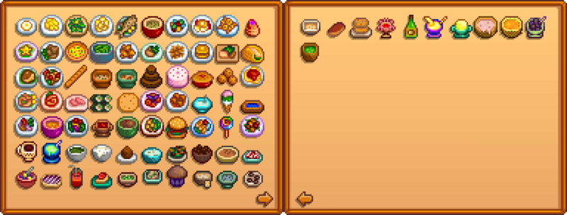

Template:Collections Cooking
Jump to navigation
Jump to search
| Article Stub
This article is marked as a stub for the following reason:
|

Description
This template displays the collection page for cooking.
Use
{{Collections Cooking}}